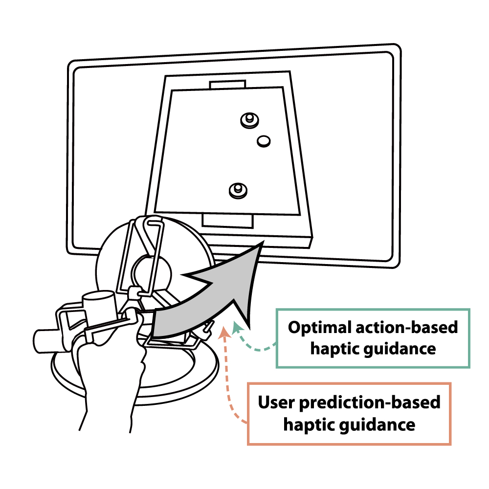
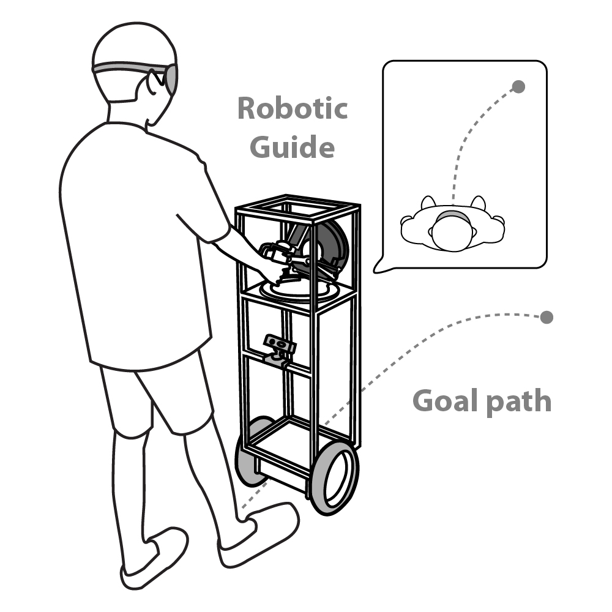
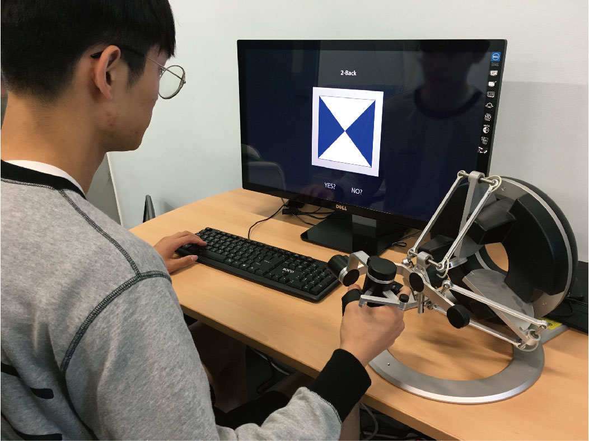

I am a PhD student at Yonsei University advised by Prof. Jiwon Seo in the Intelligent Unmanned Systems Lab. I received my bachelor's degree in the School of Integrated Techonology from Yonsei University. My research interests lie at the intersection of human–robot interaction and machine learning.
Contact: hs.moon@yonsei.ac.kr
|  |
Deep Learning-based Haptic Guidance 2020 - present Haptic guidance (HG) improves users’ task performance through physical interaction between robots and users. We presented two types of HG: optimal action-based HG (OAHG), which assists users with an optimal action, and user prediction-based HG (UPHG), which assists users with their next predicted action. Deep learning-based approaches were applied, including a self-play-based reinforcement learning framework for OAHG and a meta-learning framework for UPHG. Through a user study, we validated the assisting performance of each HG for users conducting a haptic task and investigated how the user’s subjective evaluation difers for each HG. Related Publication |
|  |
Imaginary Rollout-based Robotic Guide Training 2017 - 2019 Training a robot that engages with people is challenging, because it is expensive to involve people in a robot training process requiring numerous data samples. We proposed a deep learning-based model that predict human path following a robot and an evolution strategy-baesd robot training method using "imaginary rollouts" generated by the human predictive model, which compensates for this sample inefficiency problem. We applied the proposed method to the training of a robotic guide for visually impaired people, which was designed to collect multimodal human response data and reflect such data when selecting the robot’s actions. Related Publication |
|  |
Study on the Effect of Haptic Information in Multitasking Process 2015 - 2016 We implemented a multimodal task interruption environment involving the simultaneous presentation of visual information and haptic stimuli in order to investigate how the combined stimuli affect the performance on the primary task (i.e., cost of interruption). A user test (n=21) indicated that, within a visuo-tactile task environment, redundant haptic information may not only increase accuracy on the primary task but also reduce the cost of interruption in terms of accuracy. Related Publication |
Sample-Efficient Training of Robotic Guide Using Human Path Prediction Network
arXiv preprint arXiv:2008.05054,
2020
arXiv
Dynamic Difficulty Adjustment via Fast User Adaptation
ACM Symposium on User Interface Software and Technology (UIST) Poster,
2020, accepted
arXiv
Prediction of Human Trajectory Following a Haptic Robotic Guide Using Recurrent Neural Networks
IEEE World Haptics Conference (WHC),
2019
arXiv
Page
Observation of Human Response to a Robotic Guide Using a Variational Autoencoder
IEEE International Conference on Robotic Computing (IRC),
2019
Page
Observation of Human Trajectory in Response to Haptic Feedback from Mobile Robot
International Conference on Control, Automation and Systems (ICCAS),
2018
Page
Monitoring and Mitigation of Ionospheric Anomalies for GNSS-Based Safety Critical Systems: A review of up-to-date signal processing techniques
IEEE Signal Processing Magazine,
vol. 34, no. 5, pp. 96–110, 2017
Page
Effect of Local-Adaptive Haptic Guidance on a Path-Following Task
International Conference on Control, Automation and Systems (ICCAS),
2017
Page
Effect of Redundant Haptic Information on Task Performance During Visuo-Tactile Task Interruption and Recovery
Frontiers in Psychology,
vol. 7, art. 1924, 2016
Page
Adaptive UI from Human Behavior Pattern on Small Screen Interface: Focused on Double-Swipe Interface
International Conference on Human-Computer Interaction (HCII) Poster,
2015
Page
Best Paper Award
• 2017
2017 Korea Navigation Institute (KONI) Conference
Graduate fellowship
• 2015 - 2018
ICT Consilience Creative Program supported by the Ministry of Science and ICT, Korea
Minister's Award from Ministry of Science and ICT, Korea
• 2014
Creative ICT Convergence Korea 2014
Academic Excellence Award
• Spring 2014, Fall 2013, Spring 2013
Yonsei University, Korea
Undergraduate fellowship
• 2012 - 2014
ICT Consilience Creative Program supported by the Ministry of Science and ICT, Korea
Hee-Seung Moon | hs.moon@yonsei.ac.kr